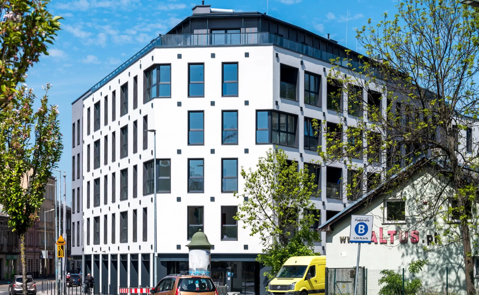
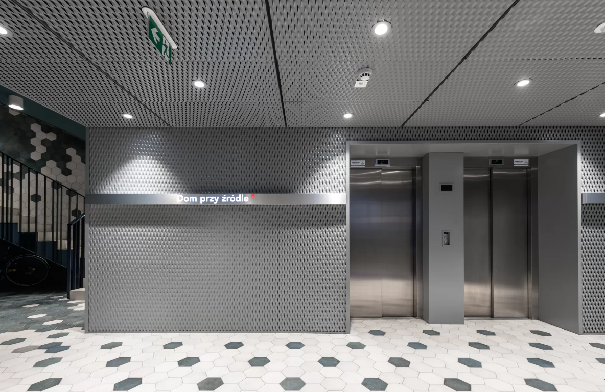
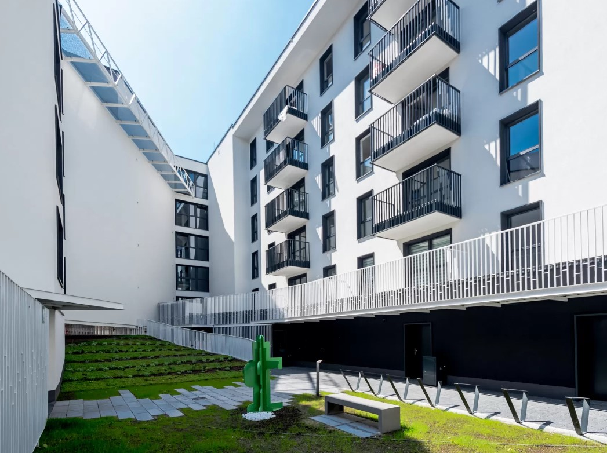

Stanowisko: INŻYNIER BUDOWY
Zakres obowiązków:
-
wykonywanie obmiaru prac tynkarskich oraz malarskich
-
sprawdzanie zgodności z projektem wykonania konstrukcji oraz instalacji elektrycznej, sanitarnej i wodno - kanalizacyjnej
-
zbieranie informacji do ofertowania
- BUDOWA BUDYNKÓW WIELORODZINNYCH - KRAKÓW, UL. KALWARYJSKA


